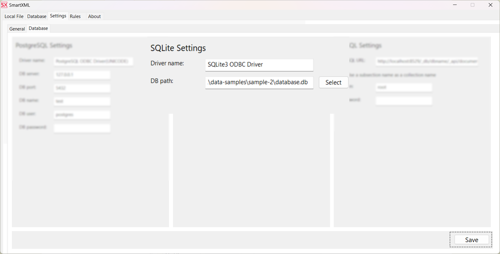
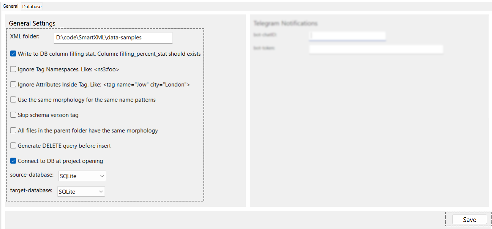
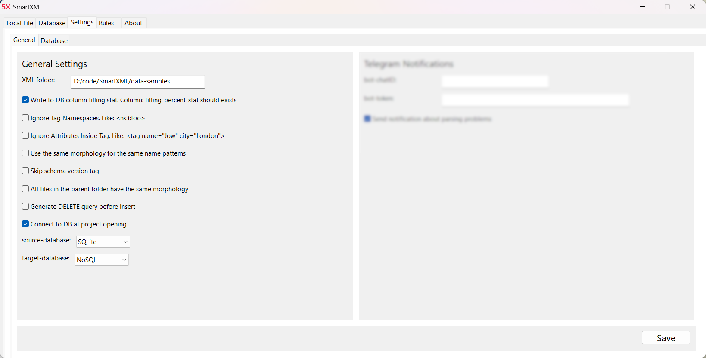
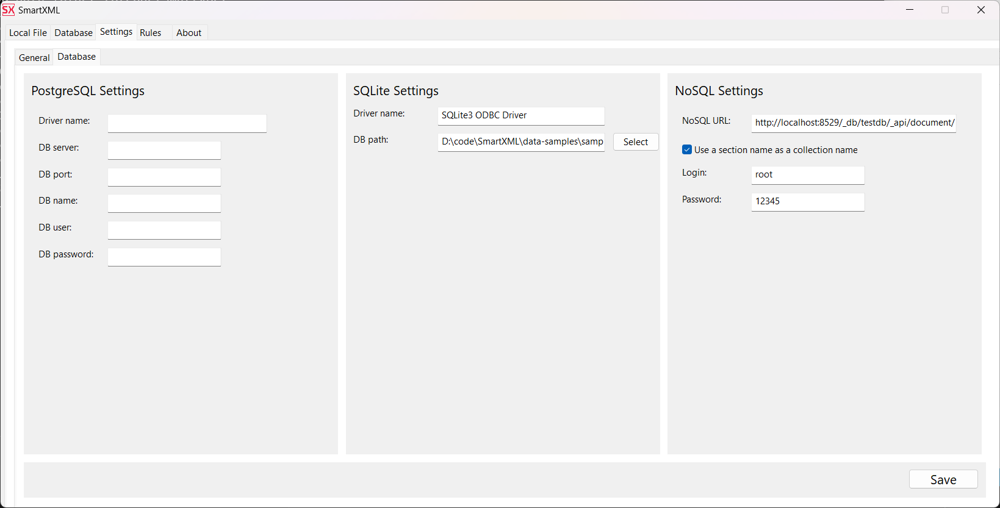

Database connection configuration
Конфигурация для работы с реляционными базами: PostgreSQL/SQLite
-
Установите 32-битный ODBC драйвер для используемой базы данных.
Для SQLite драйвер можно скачать тут.
Для PostgreSQL рекомендуется установить ODBC драйвер через идущий в комплекте с PostgreSQL Application Stack Builder.
На Linux используйте инструкции идущие в архиве с программой.
-
Имя драйвера на Windows можно посмотреть запустив ODBC Data Sources (32-bit)
На вкладке Drivers убедитесь что в списке отображаются установленные драйвера. Их имена могут отличаться от приведенных в примере имён по умолчанию. Однако обычно они следующие:
PostgreSQL ODBC Driver(UNICODE)иSQLite3 ODBC Driver.На Linux список установленных ODBC драйверов обычно находится в /etc/odbcinst.ini
-
Откройте ваш проект и на вкладке Settings⮞Database для используемых баз данных укажите реквизиты доступа. В примере показана настройка SQLite.
Сохраните изменения нажав кнопку Save.
-
Перейдите на вкладку Settings⮞General
Если в базе данных хранится полный путь, то оставьте поле XML Folder пустым.
Если база содержит относительный путь до XML файлов укажите недостающую часть пути.
Пример: Если в вашей базе хранится ссылка на файл относительная вида: basic-sample/example_1.xml, а полный путь до XML файла выглядит следующим образом: D:\code\SmartXML\data-samples\basic-sample\example_1.xml, то требуется указать в этом поле недостающую часть пути, а именно D:\code\SmartXML\data-samples. После чего SmartXML при обращении к файлам будет склеивать эти пути в полный путь вида: D:\code\SmartXML\data-samples\basic-sample\example_1.xml
При необходимости включите сбор статистики по заполнению разобранных файлов Write to DB column filling stat
Убедитесь что установлена галочка Connect to DB at project opening
Параметры Source Database и Target Database отвечают за исходную и целевую базу данных. Поддерживается работа как с одной единственной базой данных, так и в ситуации когда ссылки на исходные данные хранятся в одной БД, а результаты парсинга требуется поместить в другую БД. Обычно это происходит когда результаты требуется загрузить в NoSQL.
В указанном примере исходная таблица xml_files будет находиться в той же базе, что и результаты парсинга. Поэтому в Source Database и Target Database будет установлена
SQLite.Сохраните изменения нажав кнопку Save.
Обязательно перезапустите SmartXML и откройте проект заново. Без этого подключение к БД не будет установлено.
Конфигурация для работы с NoSQL базами данных
-
Убедитесь что ваша база данных поддерживает работу по интерфейсу http(s)
-
На вкладке Settings⮞General установите Target Database в
NoSQL - Перейдите на вкладку Settings⮞Database⮞NoSQL Settings и укажите
реквизиты доступа: NoSQL URL, login,
password

localhost- адрес сервера8529- порт который использует ваша БД[db-name]- имя использумой базы данных. Может отличаться от имени проекта[section]- имя коллекции, которое должно совпадать с именем подсекции в SmartXMLdocument- тип хранимых данных. Указвыается при создании коллекции
Логическая группировка данных в NoSQL происходит посредством коллекций. В SmartXML каждая секция играет роль коллекции в NoSQL. Большинство популярных баз данных требует, чтобы URL для отправки данных содержал так же имя коллекции в которую будет происходить вставка.
Поэтому убедитесь что установлена галочка Use a section name as a collection name
Теперь после разбора каждый файл, будет отправлен для вставки по адресу имеющему следующий вид:
http://localhost:8529/_db/[db-name]/_api/document/[section]
Где:
Так в проекте sample_1 имя секции sample имя подсекции в простых случаях может совпадать с именем секции и значения не играет.
Значит коректным NoSQL URL будет:
http://localhost:8529/_db/testdb/_api/document/
А сама отправка данных произойдет на адрес:
http://localhost:8529/_db/testdb/_api/document/sample
Настройка NoSQL на примере ArangoDB
Создайте в ArangoDB новую базу данных
Укажите имя новой базы данных
Переключитесь на новую базу, никогда не используйте системную
Выберите созданную базу
Добавьте новую коллекцию
Укажите имя новой коллекции. Имя должно совпадать с именами секций проекта
После выполнения данных шагов NoSQL база готова к загрузке данных.